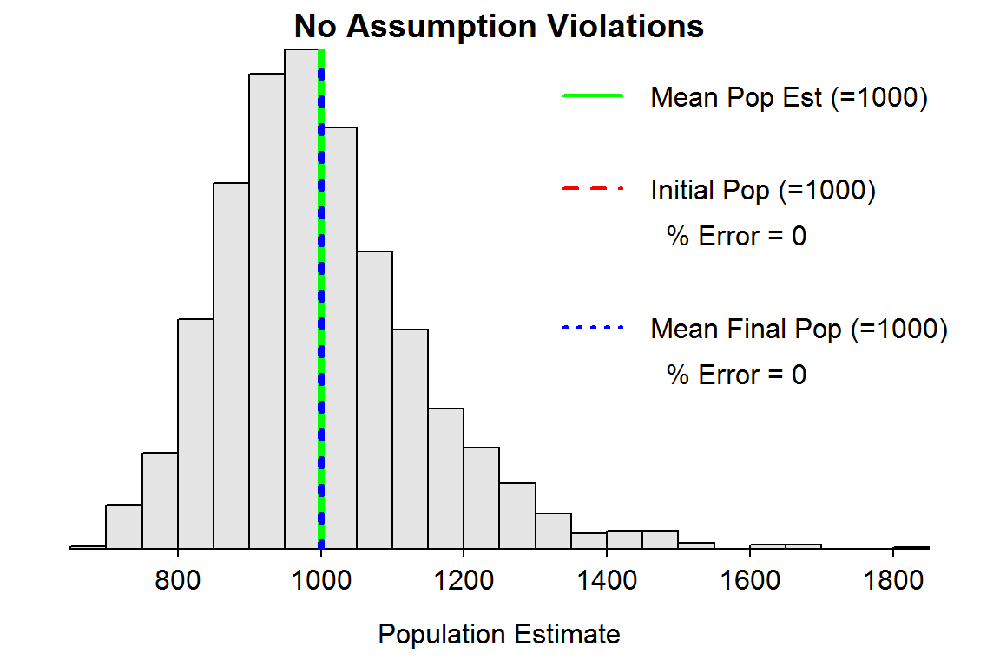

Understanding the Bias of Petersen Estimates
 In this exercise, you will simulate violations of assumptions for the Petersen family of mark-recapture methods to determine if your expectations from the previous page are met.
In this exercise, you will simulate violations of assumptions for the Petersen family of mark-recapture methods to determine if your expectations from the previous page are met.
Simulation Description
The mrClosed1Sim() function in the FSAsim package was introduced on the first page of this exercise. That function can also be used to assess assumption violations by including the sim="assumptions" argument.
The same type of histogram will be produced as described earlier. However, in some simulations the population will not be closed and thus a final population size will exist and may be different than the initial population size. Thus, this histogram will be further augmented with a blue vertical line at the mean final population abundance and the percentage error of the population abundance estimated from this value will be computed and printed on the graph.
> mrClosed1Sim(sim="assumptions")
As before, this plot will have a gear icon in the upper-left corner that will open a dialog box that allows you to change the estimation method (default is Chapman) and several population values as described below.
PR(Mark Loss)is the probability of losing the mark between the first and second samples. A value of zero (the default) indicates no tag loss.PR(Surv Tagged)is the probability of survival for marked fish between the first and second samples. A value of one (the default) indicates no mortality.PR(Surv UNtagged)is the probability of survival for unmarked fish between the first and second samples. If this value is the same asPR(Surv Marked), then survival/mortality does not differ between marked and unmarked fish.Proportion Recruitis the proportion of the population alive after the first sample that will recruit to the population prior to the second sample. A value of zero (the default) indicates no recruitment.PR(Capture) Ratio (M/U)is the ratio of the probability of capture of marked fish to the probability of capture of unmarkd fish for the second sample. Values greater than one indicate that marked fish are more likely to be captured than unmarked fish, whereas values less than one indicate that marked fish are less likely to be captured than unmarked fish. A value of one (the default) indicates that the probabilities of capture are the same between marked and unmarked fish.
Note that the title to the plot will describe the type of assumption violation (if any) being simulated. You also may need to make the plot pane larger to see the entire set of gear options.
Questions IV– Observations from Violated Assumptions
For the questions below use the Chapman modification of the Petersen method (the default) to estimate abundance, an expected number of tags of 200 (the default), an expected number in the final sample of 200 (the default), and an initial population abundance of 1000 (the default). [Remember to return the sliders to these default value after each situation.] For each situation, identify (with a supporting graphic) whether the population estimate is an over, under, or unbiased estimate of the initial AND final population sizes and identify whether your expectations for the initial population size from the previous page were met.
- Simulate tag loss by increasing the probability of losing a tag.
- Simulate mortality between the first and second sample by decreasing the probability of survival for both tagged and untagged fish to the same value.
- Simulate mortality of just tagged fish by decreasing the probability of survival for tagged fish (i.e., leave the probability of survival of untagged fish at the default value of 1).
- Simulate mortality of just untagged fish by decreasing the probability of survival for untagged fish (i.e., leave the probability of survival of tagged fish at 1).
- Simulate recruitment to the population by increasing the proportion of the initial population to recruit.
- Simulate increased catchability of tagged fish in the final sample (i.e., “trap-happy”) by increasing the ratio of probability of capture.
- Simulate decreased catchability of tagged fish in the final sample (i.e., “trap-shy”) by decreasing the ratio of probability of capture.
- Which scenario above would be the same as having the technician miss marked fish in the second sample.
- Which scenario above would be the same as releasing marked fish next to the nets used to collect fish for the second sample.
Questions V – Summarizing Effects of Violated Assumptions
- Which assumption violations allow the biologist to still reliably estimate the initial population abundance?
- Which assumption violations allow the biologist to still reliably estimate the final population abundance?
- Which assumption violations allow the biologist to still reliably estimate both the initial and final population abundances?
- Which assumption violation does the initial population abundance seem most sensitive to?